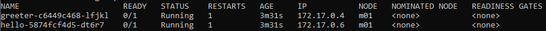
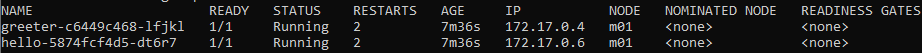
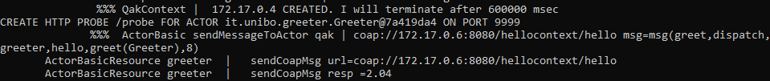
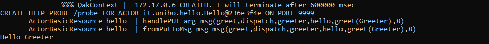

- Create a local Kubernetes cluster using Minikube:
When a Kubernetes cluster is created in Minikube, a context is created with
the same name as the Minikube profile and is then set as the current context.
So, kubectl commands that are issued after the cluster is created in Minikube
will be sent to that cluster.
minikube start -p qubeactors ^
--memory=2048 ^
--cpus=2 --disk-size=6g ^
--kubernetes-version=v1.15.0 ^
--vm-driver=virtualbox
This will create a VirtualBox virtual machine with the specified available resources.
- Run:
minikube docker-env -p qubeactors
the last two line in the output show a command that can be used to access the internal Minikube Docker engine from our shell:
REM To point your shell to minikube's docker-daemon, run:
REM @FOR /f "tokens=*" %i IN ('minikube -p qubeactors docker-env') DO @%i
- Run the command
@FOR /f "tokens=*" %i IN ('minikube -p qubeactors docker-env') DO @%i
- Run
docker-compose build
from the same shell when the previous command was issued.
You may notice that something is changed if docker-compose starts downloading the JDK image.
That happens if the internal Minikube Docker engine does not have the JDK image already available. Also, notice that
this command works even if you haven't started Docker for Windows.
- Create a Kubernetes namespace:
kubectl create namespace qubeactors
- Set the created namespace as the default namespace:
kubectl config set-context qubeactors --namespace=qubeactors
This works because qubeactors is the name of the current context (previously set by Minikube). Otherwise
one should first get the current context name with kubectl config current-context or kubectl config get-contexts
(which also shows the context default namespace).
- From where you put the file system structure with the Kubernetes configuration, as explained in the previous section, run:
kubectl apply -k kubernetes/services/base
- Run
kubectl get pods -o wide
the output should look like this:

You may notice that some Pods failed to start. This is normal because the IP set for the QActork contexts may not match with the
IP assigned by Kubernetes.
- To find out the reason for the failue, run the
kubectl describe command kubectl describe pod greeter-c6449c468-42tdl
the output will show that the pod failed to run because the liveness and readiness probe failed.
- To get a deeper understanding of the reason behind the failure, let's see the Pod logs:
kubectl logs greeter-c6449c468-42tdl
the output will show that the QActork infrastructure is still trying to create a proxy to the other context. That's because the configured
IP is not present in the Kubernetes internal network. This causes the actor code not to be run, which results in the liveness and readiness
probes not to be available for Kubernetes, ultimately causing the error shown by the kubectl describe command.
Note: The workaround is clearly in contrast with Kubernetes best practises but seems quite stable since Kubernetes
appears to use the same IPs for the Pods if possible, although that is not guaranteed. However, working in this way
implies that communication will happen only between the pods with the configured IP addresses. Replicas of the Pods
will have different IPs and will not partecipate in the communication (a fact that undermines some crucial benefits of using Kubernetes).
- Update the QActork executable models by assigning to each context the IP assigned to the corresponding Kubernetes Pod (which is shown by the
kubectl get pods -o wide command).
- Rebuild the deployable artifact and build the images (with the console linked to the internal Minikube Docker engine, as before):
gradle -b build_greetercontext.gradle build
docker-compose build
- After a wile, the deployment should be up and running. The
kubectl get pods -o wide should return something similar to:

what happened is that when Kubernetes was restarting the Pods due to probe failures, it automatically fetched the latest container images that we had just built
with the docker-compose build command. This way it was able to update the images without being explicitly instructed to do that.
- The
kubectl logs command will show that the communication has been successfully accomplished:


- Now you can clean up the deployment:
kubectl delete namespace qubeactors
minikube stop -p qubeactors
minikube delete --profile qubeactors
Further Research
During the experimentation a few ideas about how to achieve better integration between the QActork infrastructure and Kubernetes have come to mind, which are presented in the following sections.
Hostname Support
Enhance the infrastrucutre with support for hostnames such has <protocol>://hello or <protocol>://greeter.
This should allow to exploit the built-in discovery and load balancing feature of Kubernetes, resolving the static IP assignment problem.
Deploying with an MQTT Broker
Using an MQTT Broker may also solve the issue since the actors no longer need to know each others IP addresses, as is needed for TCP communication.
Automated Configuration
Default configuration and build files for both Docker and Kubernetes could be generated automatically from QActork executable models in order to foster a faster and less error-prone development.
Buil-in Infrastructure Support
Some resources could be automatically generated and instantiated by the QActork infrastructure if needed, for example:
- Liveness and readiness (and startup) probes
- Container image running the MQTT Broker (and correspoing configuration)
Support for Other Kubernetes Features
Kubernetes offers support for many aspects of microservice development, for example:
- Centralized Configuration
- API Gateway (Ingress)
- Certification Management
Therefore, it could be useful integrate some of these features with the QActork infrastructure.
Open Issues
- Service Objects in Kuberentes configuration probably not needed at the moment
By Jean Claude Correale